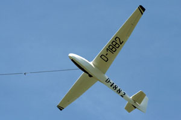
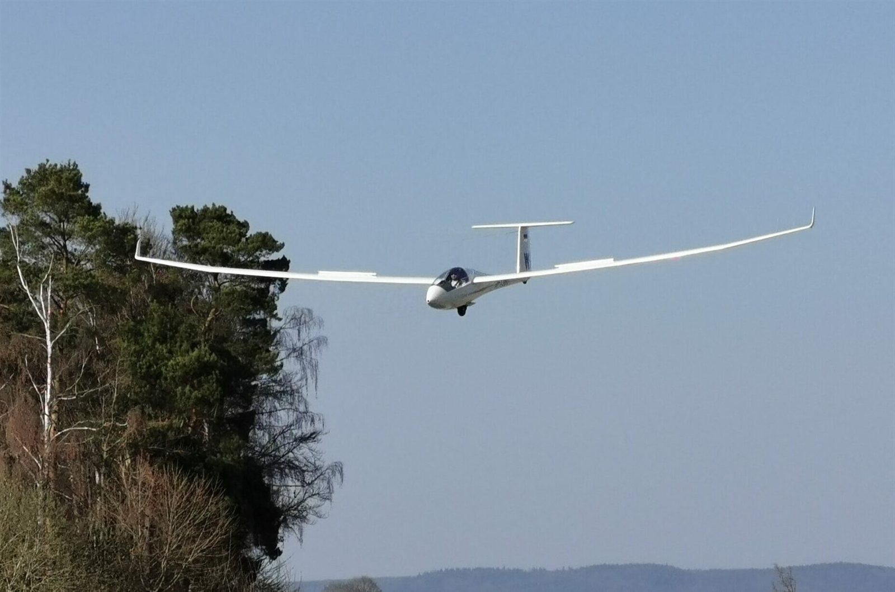
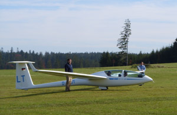
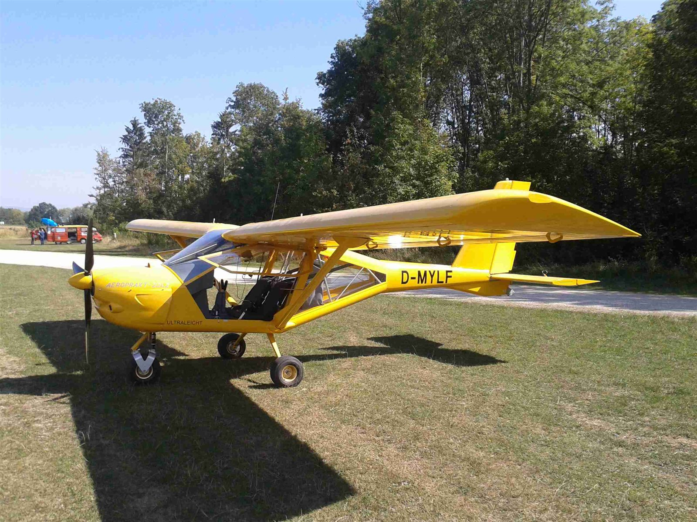
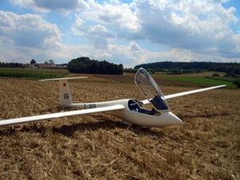
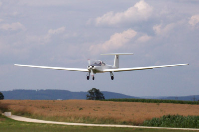
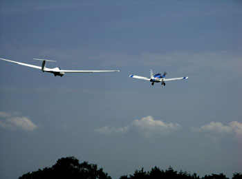
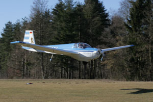
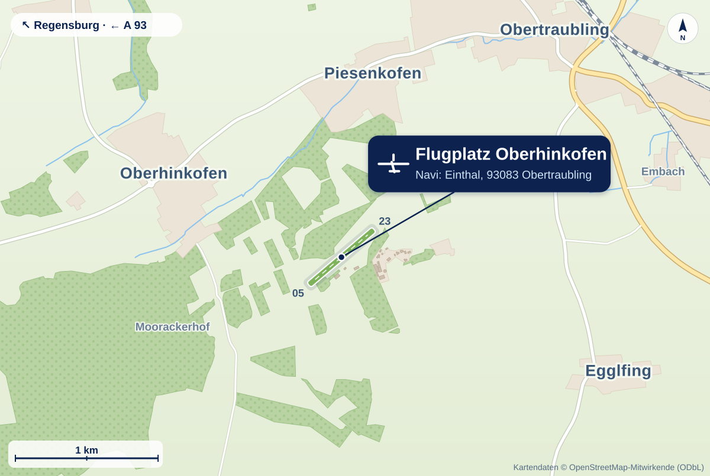

Lautlos fliegen.
Gemeinsam.
Seit 1950 fliegen wir vom Flugplatz Oberhinkofen, 8 km südlich von Regensburg – mit Segelflugzeugen, Motorseglern und Motorflugzeugen. Komm vorbei und flieg mit!
Neues vom Flugplatz

Jahresabschlussfeier
Unsere Jahresabschlussfeier war dieses Jahr mal wieder ein voller Erfolg. Ab dem Anzapfen herrschte gute Stimmung und natürlich waren auch frische Leberkassemmmeln mit von der Partie.
Weiterlesen →
Jugendvergleichsfliegen
An unserem Platz fand dieses Jahr drei Tage lang das Jugendvergleichsfliegen statt - ein riesiger Spaß mit Jugendlichen aus der ganzen Oberpfalz.
Weiterlesen →Einmal selbst über den Wolken
Du willst wissen, wie sich Fliegen anfühlt? In unseren doppelsitzigen Segel-/ oder Motorflugzeugen nehmen wir gerne Gäste mit!
- Anfragen – Direkt hier Mitflug Anfragen
- Vorbeikommen – Mitflüge gibt es meist von April bis Oktober an Wochenenden und Feiertagen bei gutem Wetter.
- Abheben – mit einem erfahrenen Piloten Regensburg und Umgebung von oben erleben.
Windenstart, ca. 10min
Von 0 auf 100 in 3 Sekunden.
Beim Windenstart kannst du das Erleben!
10 Minuten - 20€
Verlängerung pro Minute: 1,00€
Ein etwas längeres Flugerlebnis gibt es bei uns im F-Schlepp
20 Minuten - 80€
Kunstflug - 90€
Verlängerung pro Minute: 1,00€
Motorisiert Abheben, mit unseren Motormaschienen.
Rundflug ca. 20 Minuten - 50€
Burgenrundflug ca. 60 Min - 150€
Verlängerung pro Minute: 2,50€
Ehrenamt, das abhebt
Im Luftsportverein Regensburg e. V. wird Segel- und Motorflug betrieben. Wir sind eine offiziele Ausbildungseinrichtung und stellen unseren Mitgliedern die Flugzeuge zur Verfügung. Wartung, Windenfahren oder Rasenmähen erledigen wir selbst – Fluglehrer, Funktionäre und der Vorstand arbeitet ehrenamtlich, nur so können wir günstig abheben.
Mitglieder
aktive Pilotinnen und Piloten
Vereinsflugzeuge
Unsere Flugzeuge
Unsere Flotte besteht aus Sechs Segelflugzeugen, vom Schulungsdoppelsitzer bis zum Hochleistungseinsitzer.
Motorisiert beten wir Motorsegler, ein Motor- sowie ein Ultraleichtflugzeug.

ASK 13
Mit der ASK 13 beginnt bei uns die Ausbildung. Der gutmütige Doppelsitzer in Gemischtbauweise ist ideal für die ersten Flüge mit Fluglehrer.
Mehr erfahren →
Ka 8b
Der klassische Einsitzer für die ersten Alleinflüge. Hier sammeln Flugschüler ihre ersten Alleinflug Erfahrungen.
Mehr erfahren →
ASK 21
Moderner Kunststoff-Doppelsitzer für die fortgeschrittene Ausbildung. In der ASK 21 nehmen wir auch gerne Gäste mit.
Mehr erfahren →
Discus CS
Leistungsstarker Einsitzer der Clubklasse. Mit dem Discus geht es auf die ersten großen Streckenflüge.
Mehr erfahren →
Ventus 2b
Unser Hochleistungs-Einsitzer mit einer Gleitzahl von 1:48. Mit Wasserballast ist er für lange Strecken an starken Thermiktagen gemacht.
Mehr erfahren →
DG 505
Leistungsdoppelsitzer mit 20 m Spannweite. Mit kurzen Flächen (18 m) ist er auch für den Kunstflug geeignet.
Mehr erfahren →
HK 36 TTC Super Dimona
Moderner Reisemotorsegler aus Kunststoff mit 115-PS-Turbomotor. Schnell, komfortabel und mit guter Gleitleistung.
Mehr erfahren →
American Champion Citabria
Unser Schleppflugzeug mit 160 PS. Es bringt die Segelflugzeuge im F-Schlepp in die Luft und dient auch der Echo-Schulung.
Mehr erfahren →
Aeroprakt A-22
Zweisitziges Ultraleichtflugzeug mit 100 PS. Bei uns kommt es vor allem als Schleppflugzeug zum Einsatz.
Mehr erfahren →
Scheibe SF25C Falke (D-KLEX)
Der Motorsegler für die Umschulung zum Motorseglerpiloten. Er startet selbstständig und kann im Flug auch segeln.
Mehr erfahren →
ASW 19
Der Einsitzer für Thermik- und Überlandflüge. Mit einer Gleitzahl von rund 39 kam man aus 1.000 m Höhe etwa 39 km weit.
Mehr erfahren →
Valentin Taifun 17E
Schneller Reisemotorsegler mit Einziehfahrwerk, Verstellpropeller und Wölbklappen – einer der schnellsten seiner Art.
Mehr erfahren →
Morane Rallye 180TD
Viersitziges Motorflugzeug für Reisen, Schlepp und Rundflüge – gutmütig und sehr kurzstartfähig.
Mehr erfahren →
Scheibe SF25C Falke (D-KDDF)
Der erste C-Falke des Vereins. Mit ihm schulten Segelflieger auf den Motorsegler um.
Mehr erfahren →Fliegen, bevor du Auto fährst
Unsere aktive Jugendgruppe ist für alle zwischen 14 und 27 Jahren.
Wir freuen uns immer sehr über Neuzugang!


Dein Weg zur Segelfluglizenz
Bei uns lernst du das Segelfliegen von ehrenamtlichen Fluglehrern – im Verein und damit günstiger, als die meisten denken. Gefragt sind vor allem Zeit und Engagement.
Früh starten
Mit 14 beginnt die Ausbildung, zum 16. Geburtstag gibt es den Luftfahrerschein.
ASK 13 → Ka 8 → ASK 21 → Discus
Erst mit Fluglehrer, nach rund 50 Starts der erste Alleinflug.
Im Winter lernen
Theorie in den Wintermonaten, danach Prüfung beim Luftamt und praktische Prüfung.
Hunderte Kilometer ohne Motor
Von Aufwind zu Aufwind, unter Wolkenstraßen entlang, Streckenflüge sind die Königsdisziplin des Segelflugs.
Michael Sommer
Flüge auf WEGLIDE ansehen
Streckenflüge unserer Piloten aus Oberhinkofen können auf WeGlide verfolgt werden
Discus, Ventus, DG 505
Leistungsflugzeuge vom Hochleistungseinsitzer bis zum Doppelsitzer.
Winterarbeit - ein Teil der Fliegerei
Wenn die Saison vorbei ist, steht die Jährliche Winterwartung unserer Flugzeuge an. Von der ASK 13 über ASK 21 bishin zum Ventus. Als Verein erledigen wir Wartung und Pflege unserer Flugzeuge sowie Fahrzeuge selbt.


Flugplatz Oberhinkofen
Hinweis: Angaben laut bisheriger Vereinswebsite, ohne Gewähr. Vor jedem Flug die aktuellen Daten (AIP VFR, NOTAMs) prüfen und bei der Flugleitung nachfragen.
| Frequenz | 133.260 MHz |
|---|---|
| Koordinaten | 48° 57' 09,3" N / 12° 08' 54,2" E |
| Piste | 05/23 · 600 m · Gras |
| Zugelassen für | Segelflugzeuge, Motorsegler, Ultraleicht |
| Platzrunde | Segelflugzeuge im Norden, Motorsegler im Süden, 2300 ft MSL |
| Startarten | F-Schlepp und Windenstart |
| Betrieb | Saison April bis Oktober, vor allem an Wochenenden und Feiertagen, ca. 9 bis 18 Uhr |
| Achtung | Stromleitungen ca. 600 m vor Schwelle 05 (etwa Nord-Süd). Ortschaften nicht direkt überfliegen. Windenschleppstrecke nicht überqueren, Piste nicht betreten. |
| Flugleitung | 09453 7244 |
Interesse geweckt?
Schreib uns einfach, oder komm an einem Flugtag bei uns vorbei. Wir freuen uns auf dich!
Luftsportverein Regensburg e. V.
Postfach 1126
93081 Obertraubling
Flugplatz (Navi): Einthal, 93083 Obertraubling
Telefon Flugplatz: 09453 7244
info@luftsportverein-regensburg.de
Mitfliegen: mitflug@luftsportverein-regensburg.de
Ausbildung: ausbildung@luftsportverein-regensburg.de
So findest du zu uns
